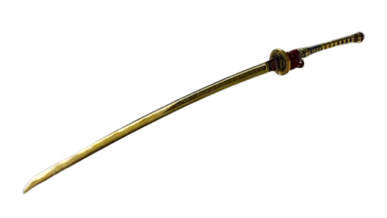

Primera aparición: Temporada 1 - capítulo 15
Usuarios: Takemikazuchi, Invictus
Creador: Takemikazuchi
Descripción: Una de las 12 armas divinas, una espada larga y fino que le permite al usuario cortar tanto en el mundo físico como en el mundo espiritual. El masamune solo puede ser usado por aquellos a los que él cree que son dignos de poseerlo, solo un guerrero valiente y poderoso podrá sacar todo el potencial del arma. Takemikazuchi fue el primer usuario de dicha arma y su creador. Una vez te fusionas con esta arma podrás viajar entre ambos mundos a voluntad propia y poseerás una armaduras cubierta de espinas mágicas.